地政学
ジョージタウンは南米北岸にありながらカリブ共同体の中枢でもあります。ベネズエラとの国境問題、石油開発、英語圏外交、海上交通が首都に集まり、河口の市街地が国際政治を受け止めます。外交の窓口にもなります。
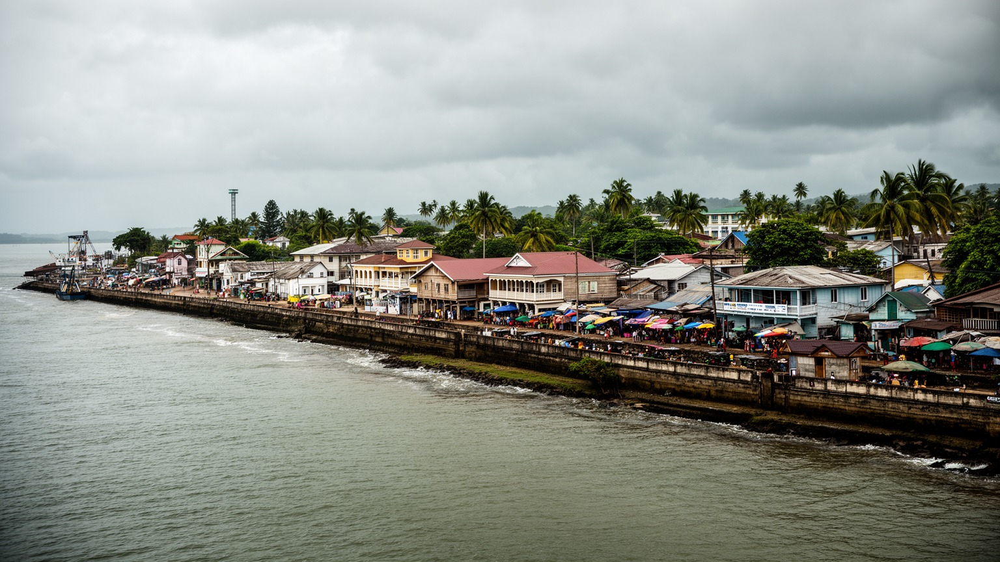
🇬🇾 ガイアナ / 南米北岸 / World City Atlas
大西洋とデメララ川の低い河口に、政府、港、CARICOM、石油関連サービス、市場、木造聖堂、海堤、排水路が集まるガイアナの首都です。
都市の骨格
ジョージタウンはデメララ川の東岸にあり、海堤、排水路、水門、港、官庁街、市場が近接します。新しい石油収入は、低地の首都に期待と圧力を同時に運んでいます。
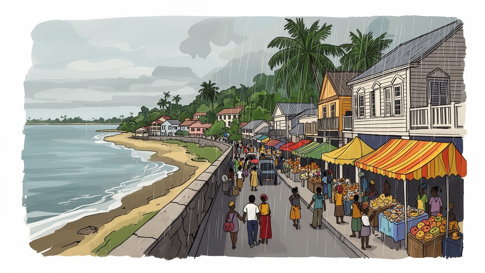
ジョージタウンは南米北岸にありながらカリブ共同体の中枢でもあります。ベネズエラとの国境問題、石油開発、英語圏外交、海上交通が首都に集まり、河口の市街地が国際政治を受け止めます。外交の窓口にもなります。
沖合油田が国家経済を押し上げ、首都には政府契約、港湾、建設、金融、宿泊、警備、物流の仕事が増えます。市場や小売も残り、急成長の収入が家賃、賃金、技能差へどう届くかが問われます。若者の訓練も重要です。
アフリカ系、インド系、先住民、中国系、ポルトガル系の記憶が、教会、寺院、モスク、市場、音楽、食卓に重なります。英語圏カリブの言葉と南米の地理が混ざり、首都の文化を厚くしています。祭礼も街を結びます。
観光客はスタブロック市場、聖ジョージ大聖堂、海堤、博物館を歩きます。住民には洪水、交通、治安、住宅費、公共サービスが日常です。低地の美しさと脆さが、同じ街路に並びます。夕方の海堤も大切な生活の場です。
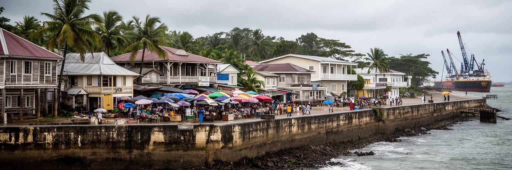
ジョージタウンはデメララ川の河口に置かれた低地の首都です。市街地は大西洋の潮位に近く、場所によっては高潮や大雨への備えが都市の前提になります。海堤、排水路、水門、ポンプ、運河は景観の飾りではなく、道路、住宅、市場、官庁を日々使える状態に保つ基盤です。オランダ系の排水技術とイギリス植民地期の格子状街路が重なり、街は水を外へ出す仕組みとともに発展してきました。海辺を歩けば、夕方の散歩、屋台、家族連れ、釣り人が見えますが、そのすぐ背後では排水溝の詰まり、ゴミ、舗装、堤防の維持が暮らしを左右します。気候変動で降雨や高潮のリスクが増すほど、低地の首都は都市計画の精度を問われます。新しい建物や道路が増えても、排水の容量が追いつかなければ浸水は悪化します。ジョージタウンの美しさは、水辺の開放感だけではありません。水と共存するために、住民、行政、技術者が毎日小さな調整を続けていることにあります。海堤の上の穏やかな時間と、雨季の緊張を同時に見ると、この首都の地理的な厳しさが分かります。低い土地に国家の中心を置くことは、成長の喜びと防災の責任を切り離せないということです。朝の通勤、学校の始業、市場の搬入まで、排水の状態に左右されます。水を逃がす仕組みを保つことは、首都の日々の時間を守ることでもあります。
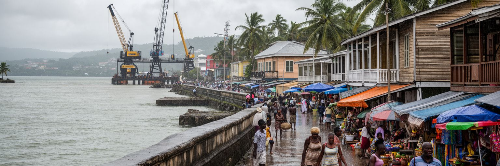
ジョージタウンはガイアナの行政首都であるだけでなく、カリブ共同体CARICOMの本部が置かれる地域外交の都市です。ガイアナは地理的には南米大陸にありますが、英語、公法制度、移民史、教育、スポーツ、音楽、外交では英語圏カリブと深く結びついています。首都には大統領府、議会、裁判所、省庁、大使館、国際機関、報道機関が集まり、国内政策と地域政策が近い距離で動きます。ベネズエラとのエセキボ地域をめぐる緊張、海洋権益、沖合油田、森林保全、先住民の権利は、ジョージタウンの政治を国境の外へ押し出します。石油収入で国家財政が急速に大きくなるほど、透明性、契約、汚職対策、分配、環境保護の議論も強くなります。小さな首都では、官庁の判断が港の仕事、建設現場、学校、病院、地方コミュニティへすぐ波及します。CARICOMの都市として見ると、ジョージタウンは島しょ国と大陸国家をつなぐ珍しい結節点です。ハリケーン、食料安全保障、移民、スポーツ、教育、外交の議題がここで扱われます。首都の政治性は、壮大な官庁街よりも、低い土地に置かれた制度が急成長と国際緊張をどう管理するかに表れます。国の将来を決める会議と、市場へ向かうバスが近い距離で交差することが、この都市の現実です。外交文書の言葉と、物価や雇用をめぐる住民の会話が重なるため、政治は抽象的なものではありません。
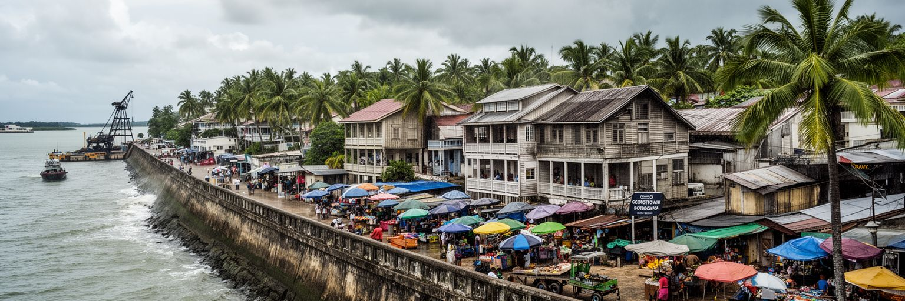
近年のガイアナを大きく変えているのは、沖合油田による急成長です。ジョージタウンには政府契約、石油関連サービス、港湾物流、ホテル、建設、金融、法律、保険、警備、人材育成の需要が集まり、これまでの砂糖、米、金、ボーキサイト、林業に支えられた経済像を変えつつあります。港は資材、機械、燃料、食料、消費財を受け入れ、デメララ川沿いの産業地や道路網と連動します。新しい収入は道路、学校、病院、住宅、堤防を整える機会になりますが、同時に物価上昇、家賃、格差、外資依存、技能不足も生みます。石油産業で働く人だけが豊かになるなら、首都の市場で働く人や低所得の家族には成長の実感が届きません。建設現場やホテルで仕事が増えても、労働安全、賃金、訓練、交通、住居が整わなければ生活は不安定です。ジョージタウンの港湾経済を読むには、輸出額やGDP成長率だけでは足りません。誰が契約を得て、誰が賃貸住宅を失い、誰が新しい技能を学べるのかを見る必要があります。石油は国を一気に可視化しますが、都市の安定は収入を公共サービスと生活の安心へ変えられるかで決まります。河口の港は、成長の入口であると同時に、不平等が広がる入口にもなり得ます。港湾の近くでは、通関、運転、倉庫、食堂、修理、清掃の仕事も増えます。小さな雇用まで含めてこそ、成長の姿が見えます。
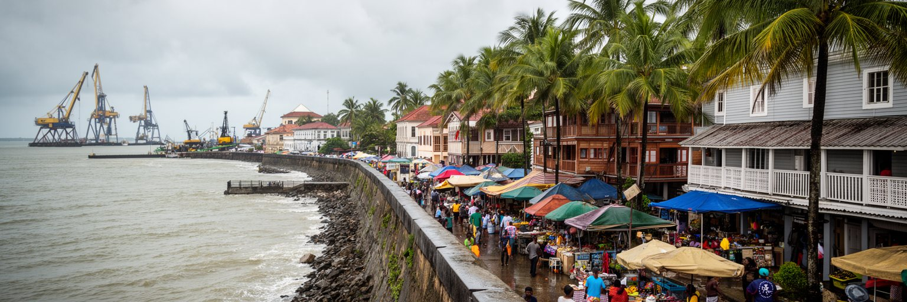
ジョージタウンの文化は、単一の由来では説明できません。アフリカ系、インド系、先住民、中国系、ポルトガル系、ヨーロッパ系の記憶が、英語とクレオールの響き、ヒンドゥー寺院、モスク、教会、食堂、市場、音楽、祝祭に重なります。奴隷制、年季奉公、植民地支配、移民労働の歴史は痛みを伴いますが、同時に都市の日常文化を厚くしてきました。スタブロック市場の周辺や住宅地では、カレー、ロティ、ペッパーポット、米料理、魚、ラム、屋台食が並び、食卓が多民族社会の記憶を伝えます。宗教施設は礼拝だけでなく、教育、慈善、葬儀、結婚、地域の相談、祭礼を支えます。一方で、民族や宗教は政治的な動員や不信の線にもなり得ます。首都の課題は、多様性を観光向けの色彩として扱うだけでなく、住民が互いの権利と安全を尊重しながら公共空間を共有できるようにすることです。ジョージタウンの街路には、カリブ海のリズムと南米大陸の地理、インド洋を越えた移民史、大西洋奴隷貿易の記憶が同時にあります。祈りの場所が近くに並ぶことは、違いが消えるという意味ではありません。違いを抱えながら市場、学校、職場、バス停を共有することが、この首都の文化の強さです。祝祭の日には音楽と食が街を満たし、普段の緊張を越えて家族や近所が再び結び直されます。そこで都市の信頼も育ちます。
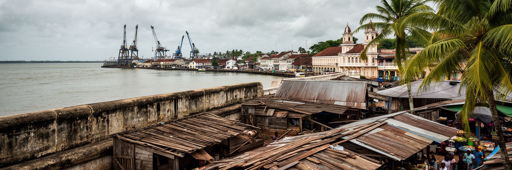
ジョージタウンを歩くと、木造建築と市場が都市の記憶を強く示します。聖ジョージ大聖堂のような大きな木造宗教建築、植民地期の官庁や住宅、ベランダ、庭、並木道は、熱帯低地の気候に合わせた建築文化を伝えます。スタブロック市場は時計塔のある都市の象徴であり、食料、衣類、生活用品、交通、両替、会話が集まる日常の中心です。観光写真では歴史建築が前に出ますが、住民にとって重要なのは、雨の日に店へ行けるか、バスに乗れるか、安全に買い物できるか、価格が家計に合うかです。木造建築は美しい一方で、湿気、火災、老朽化、修繕費、用途変更に弱い面もあります。急速な経済成長で高層化や商業開発が進むと、古い街並みは価値を持ちながらも取り壊しの圧力を受けます。保存は過去を飾るだけではなく、地域の技能、木材、職人、観光、教育を結び直す政策でもあります。市場周辺では混雑、ゴミ、治安、歩道、排水の問題が重なりますが、そこを単に雑然とした場所として片づけると、都市の台所を支える労働が見えません。ジョージタウンの都市美は、木造の優雅さと市場の粘り強い生活力が並ぶところにあります。その両方を守ることが、首都らしさを次の時代へ渡す条件です。修復された建物が使われ続け、周辺の小売や交通も整えば、遺産は博物館ではなく現役の都市資産になります。
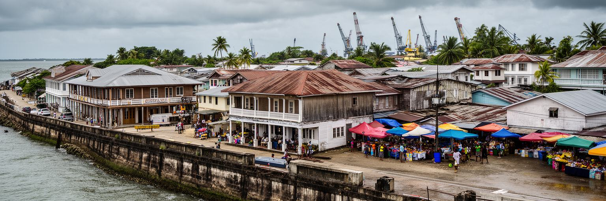
ジョージタウンの日常生活は、石油のニュースだけでは見えてきません。住民は通勤、学校、買い物、教会や寺院、病院、役所、親族訪問を、低地の道路と排水路に沿って組み立てています。住宅には古い木造家屋、新しいコンクリート住宅、賃貸住宅、郊外へ延びる新興住宅地があり、所得や家族構成によって住める場所が分かれます。経済成長は雇用と収入を増やしますが、同時に家賃、土地価格、建材費、交通費を押し上げます。低所得の家族や若者にとって、首都で暮らし続けることは以前より難しくなる可能性があります。水道、排水、ゴミ収集、電力、インターネット、公共交通、街灯、歩道は、派手ではなくても生活の質を決める基本です。雨で道が浸かれば学校や仕事へ行きにくくなり、排水路が汚れれば健康にも影響します。治安への不安は夜の移動、女性の行動、子どもの遊び場、小売店の営業時間を狭めます。ジョージタウンの生活を読むには、首都の成長がどの家庭にどの形で届くのかを見る必要があります。新しい道路やホテルが増える一方で、近所の排水溝、バス停、診療所、学校が良くならなければ、住民の評価は厳しくなります。都市の豊かさは、国の収入ではなく、毎日の用事を安心して済ませられるかに表れます。親族の助け合いや海外からの送金も家計を支えます。公的サービスと家族の支援が重なるところに、首都の生活の実感があります。
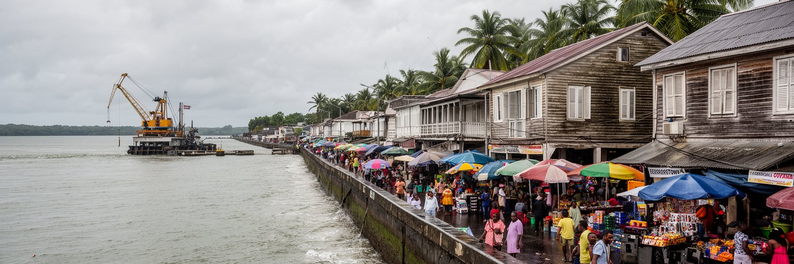
ジョージタウンの気候リスクは、遠い将来の問題ではありません。熱帯雨林気候の強い雨、河川の増水、高潮、海面上昇、排水路の詰まりは、住宅、道路、市場、学校、病院、港を直接揺らします。市街地が低いため、わずかな排水不良でも浸水が広がりやすく、交通や商売が止まります。水門やポンプは潮位との関係を見ながら動かす必要があり、都市管理は天気予報、海の状態、ゴミ処理、道路工事、住民の協力に支えられます。気候リスクは自然だけでなく社会の問題です。排水の悪い場所に住む人、修理費を払えない人、車を持たない人、情報を受け取りにくい人ほど被害が大きくなります。石油収入が増える国だからこそ、防災投資と環境責任はより厳しく見られます。堤防を高くするだけではなく、湿地、河川、都市緑地、排水路の維持、住宅の安全、避難計画を組み合わせる必要があります。ジョージタウンの防災は、首都機能を守るだけでなく、低地に暮らす人の尊厳を守る政策です。雨の日に市場が開き、子どもが学校へ行き、救急車が通れるかどうかが、都市の強さを測ります。海に近い美しさを保つには、水を管理する地味な仕事へ継続的に投資することが欠かせません。地域の清掃、排水路の点検、警報の共有、避難場所の確認も重要です。大きな堤防と小さな習慣の両方が、低地の安全を作ります。
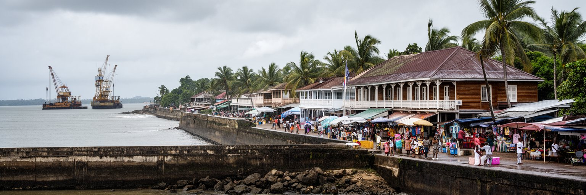
ガイアナの人口と行政機能は海岸部に大きく偏り、ジョージタウンはその中心にあります。しかし国土の大部分は森林、河川、サバンナ、鉱山地域、先住民コミュニティを含む内陸です。首都から見ると内陸は資源、観光、環境保全、国境管理の対象に見えがちですが、そこには独自の生活、土地権、言語、交通、教育、医療の課題があります。金採掘、森林利用、道路建設、エコツーリズム、炭素クレジット、保護区政策は、ジョージタウンの省庁や企業で決められても、影響は遠い村や川沿いの暮らしに届きます。石油収入が公共投資を増やす時、海岸都市だけでなく内陸の学校、診療所、通信、交通にも公平に届くかが問われます。先住民の知識は森林保全や気候政策に欠かせませんが、観光や環境の物語に利用されるだけでは不十分です。土地と自治の声が政策に反映される必要があります。ジョージタウンを首都として読むなら、街の市場や港だけでなく、内陸から来る人、商品、政治的要求にも目を向ける必要があります。首都の近代化が海岸部の便利さだけを高めると、国土の分断は深まります。ガイアナの世界的価値は、石油だけでなく森林と多様な地域社会にもあります。首都はその価値を奪う場所ではなく、守る制度を作る場所でなければなりません。川と空路で届く声を政策へ変えられるかが、首都の公平さを測ります。
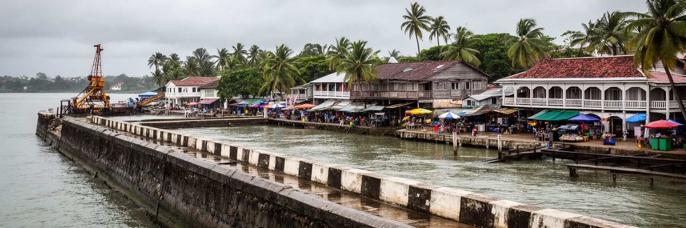
ジョージタウンの公共空間は、海堤、市場、教会前、庭園、官庁街、バスターミナル、学校周辺、川辺の通りに広がります。昼間の中心部には商いと通勤の動きがありますが、交通混雑、歩道の傷み、排水路、露店の配置、駐車、治安への不安が歩きやすさを左右します。観光客にとっては歴史建築や市場が魅力ですが、住民にとっては安全にバスへ乗れるか、夜に帰宅できるか、子どもが道を渡れるかが重要です。急成長で車や建設車両が増えると、狭い街路の負担は大きくなります。公共空間を整えることは、観光の見た目を良くするだけではありません。街灯、横断歩道、排水溝の蓋、バス停の屋根、公共トイレ、ゴミ収集、警察の対応、商店の継続が、都市の安心を作ります。治安を強い取り締まりだけで考えると、貧困、失業、薬物、ホームレス、若者の機会不足を見落とします。市場や海堤に多様な人が残れることが、都市の活力になります。ジョージタウンでは、歴史的な街並みと日常の雑多さを両方受け止める公共空間の設計が必要です。観光客が写真を撮り、住民が買い物し、若者が集まり、高齢者が休める場所があるほど、首都は安全になります。歩ける街を作ることは、低地都市の防災や健康にもつながります。公共空間は都市の余白ではなく、成長を住民の暮らしへ結びつける場所です。人が通りに残る時間を増やすことも、街の安全を支えます。
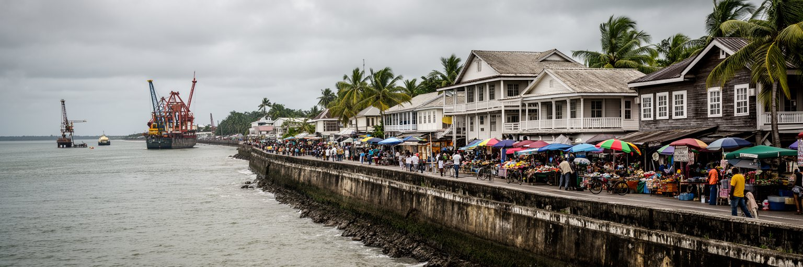
ジョージタウンの観光は、カリブのリゾート都市とは違う魅力を持ちます。スタブロック市場、聖ジョージ大聖堂、国立博物館、植物園、海堤、植民地期の木造建築、川辺の風景は、ガイアナの歴史と地理を短い距離で見せます。多くの旅行者はカイエチュール滝、熱帯雨林、野生生物、内陸のロッジへ向かいますが、その出発点として首都のホテル、空港接続、旅行会社、ガイド、許可、医療、金融が働きます。観光の可能性は大きいものの、歴史建築の保存、歩道、治安、案内表示、廃棄物、交通、洪水への備えが整わなければ、街歩きの経験は弱くなります。ジョージタウンの遺産は、個別の建物だけでなく、運河、庭園、並木、木造の通風、海堤、市場、宗教施設が作る都市全体の文脈にあります。観光開発が進む時には、住民の生活を押し出さず、地元ガイド、修復職人、小商い、文化団体に利益が残る仕組みが必要です。石油で国が注目される今、観光は経済を多様化し、歴史と自然を結ぶ手段にもなります。旅行者が首都に数時間だけ滞在するのではなく、街の水、木、祈り、食、移民史を理解できれば、ガイアナの見方は深くなります。ジョージタウンは、内陸の壮大な自然へ向かう前に、国の記憶を読み始める入口です。空港から宿へ向かう短い移動にも、水路、木造家屋、屋台、海風があり、旅の第一印象を形作ります。
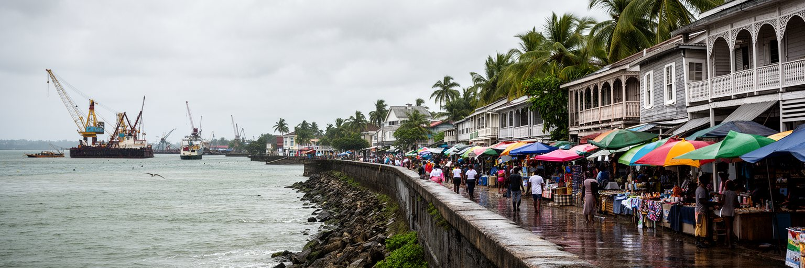
ジョージタウンは人口規模では世界の巨大都市ではありません。しかし、現代の都市を読む重要な論点が非常に濃く集まっています。海面に近い低地の防災、沖合石油による急成長、国境問題、CARICOM外交、植民地期の木造都市、多民族社会、宗教の共存、内陸の先住民と森林、港湾物流、住宅費、公共空間の安全が、数十平方キロの首都に重なります。ガイアナのGDPは石油で急拡大していますが、都市の成功は数字の大きさだけでは測れません。排水路が機能し、市場が働き、学校と病院が整い、古い建築が生き残り、内陸地域にも投資が届き、若者が技能を得られるかが問われます。成長は希望ですが、分配を誤れば格差、土地価格、環境負荷、不信を広げます。ジョージタウンを歩くと、海堤の風、木造聖堂の静けさ、市場の声、建設現場の音、官庁の議論が近い距離で聞こえます。その近さこそが、この都市の世界性です。低地の小さな首都が、気候変動、資源ブーム、地域外交、歴史遺産を同時に扱っているからです。ジョージタウンは、豊かになり始めた国が何を守り、何を変えるのかを示す場所です。水辺の脆さと資源の力をどう公共の未来へ変えるか、その答えが都市の姿に表れます。派手なスカイラインよりも、排水、学校、港、信頼できる制度が重要になります。その選択の積み重ねが、急成長する首都の品格を決めます。